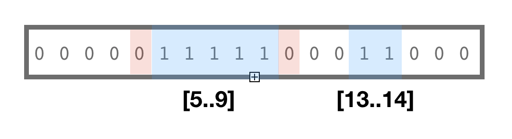

Version 6.2.0
March 8, 2020Release Notes
-
This release extends v.6.1.0 with a new group of algorithms for re-interpretation of bit-vectors as a ranges/intervals (
bmintervals.h).
Bit-interval is a contiguous block of 1s flanked with 0s as “011110”. For example bit-vector “0101110” can be interpreted as two ranges / intervals of set values: [1..1],[3..5]. New version adds a new header for interval algorithms and iterators.Name Description bm::find_interval_end(..) search for end of 1 bits coordinate bm::find_interval_start(..) Check if any bits in the specified range are 1s bm::is_interval(..) Check if all bits in the specified range are 1s AND flanked by 0s "011110" bm::interval_enumerator<> Constant iterator which provides on the fly reinterpretation of bit-vector as a collection of intervals - sample22.cpp Example updated to better reflect new (and old) API.
-
sample23.cpp Example to illustrate the
bm::interval_enumerator<>
Download v 6.2.0 (Sourceforge) GitHub
Technical notes on operations with ranges and intervals
Motivation

Compressed bit-vectors are known to offer efficient logical operations with sets. Another use case is when sequence of bits is treated as a pattern "01100011110", where island of 'ones' encodes a start-stop (left-right) range.
Ranges and intervals are applicable for many use cases from encoding of B&W images to representing events on genome (exon-intron gene structures, insertions-deletions, nucleotide matches and mismatches).
RLE compressed bit-vectors often use some form of start-stop (or start-length) internal representation, thus could potentially support ranges and intervals. Adaptive nature of compressed bit-vectors would ensure, that blocks of high enthropy (short and random ranges would remain as bit-blocks) and medium to long ranges would be encoded in GAP compressed (RLE) form. All representations would support operations on ranges (for example: intersects).
BitMagic supports serialization compression which is quite efficient with Binary Interpolative Coding. Serialization framework automatically detects intervals and uses BIC compressed representation where necessary or just keeps bit-blocks if the internal structure is more random.
There is an oppotunity here to re-use bit-vector as a container for non-overlapping intervals. The "bmintervals.h" algorithms and enumerator solve this problem, providing different interpretations on the same binary format. Since well structured bit-vectors are compressed and kept as GAPs (read: intervals) anyways, such interpretation is actually quite efficient.
Code snippet illustrates use of interval_enumerator<>
#include "bmintervals.h"
....
bm::bvector<> bv(bm::BM_GAP); // use RLE compressed vector from the start
bv.set_range(10, 10);
bv.set_range(100, 110); // sets a range of 1s [100, 110] .....11111....
bv.set_range(777, 888);
bv.set_range(65536, 65536);
interval_enumerator<bm::bvector<>> ien(bv);
if (ien.valid())
{
do
{
cout << "[" << ien.start() << ".." << ien.end() << "]";
} while (ien.advance());
cout << endl;
}